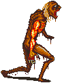

サガシリーズとソロモン７２柱
ホーム > サガとソロモン７２神
はじめに
ソロモン７２柱とは
ソロモンは、旧約聖書に登場する古代イスラエルの第3の王のこと。古代イスラエルの最盛期を築いたとされる一方、堕落した王ともされる。
ソロモン王は、一説には神から知恵（指輪）を授かった、もしくはユダヤ教の秘儀カバラが記された『ラジエルの書』を託されたとも言われ、多くの悪魔を使役したとされる。
さらにその英知を持って悪魔を支配していたという話もあり、この72体の悪魔をソロモン72柱と呼んでいる。
サガシリーズに登場するソロモン７２神
まだ途中の記事
あくまで管理人が把握している範囲なので、もっとたくさんいると思います。むしろ教えていただけると助かります sagamax(twitter)。
階級について図に整理する。
| 凡例 |
|---|
| 特になし |
| サガシリーズ |
| サガシリーズ以外 |
| # | 名前 | ソロモン72柱の能力・備考 | 階級 |
|---|---|---|---|
| ゲーム情報 | |||
| 1 | バエル | 元豊穣の神。クモの胴体を持つ。人に知恵を授ける。 | 王 |
| 2 | アガレス | ワニに乗った老人。地震などを起こす。博識である。 | 公爵 |
| 3 | ウァサゴ | アガレスと同じ性質を持つという。過去現在未来について知る。 | 君主 |
| 4 | ガミジン | 青ざめた馬の姿。ネクロマンシーが得意。 | 侯爵 |
| 5 | マルバス | ライオンと人間の姿をとる。治癒能力を持つ。 | 総裁 |
| 6 | ウァレフォル | 人かロバの頭を持つライオン。盗みを行うように誘惑する。 | 公爵 |
| 7 | アモン | 口から火を吐く狼。 | 侯爵 |
| 8 | バルバトス | 狩人の姿。 | 公爵 |
|
ロマサガ1の没モンスター。 データ上存在するがゲーム中に遭遇することはない。  ※画像はこちらから抜粋 |
|||
| 9 | パイモン | 王の中で最もルシファーに忠実な元主天使。 | 王 |
| 10 | ブエル | 驚愕の姿。治癒能力を持つ回復者。 | 総裁 |
| 11 | グシオン | 語義不明の何かに似た悪魔。秘密の物事を発見する。 | 公爵 |
| 12 | シトリー | 豹の悪魔。召喚者の色欲を満たしてくれる。 | 君主 |
| 13 | ベレト | よく怒る大魔王。礼儀正しい。恋愛専門。 | 王 |
| 14 | レラジェ | 狩人。矢傷を腐敗させることが出来る。 | 侯爵 |
| 15 | エリゴス | 騎士の悪魔。人の愛情をつかさどる。 | 公爵 |
| 16 | ゼパル | 赤い戦士。人間の情欲をコントロールする。 | 公爵 |
| 17 | ボティス | 蛇と有角の人間の二つの姿を持つ。過去と未来を知る。 | 伯爵・総裁 |
| 18 | バティン | ルシファー第二の使い魔。瞬間移動の使い手。 | 公爵 |
| 19 | サレオス | ワニに乗った悪魔。 | 公爵 |
| 20 | プルソン | 楽器の音色と共に進む。ライオンの様な顔をしている。 | 王 |
| 21 | モラクス | 男の顔を持つ雄牛。天文学等の知識と使い魔を与える。 | 伯爵 |
| 22 | イポス | 鳥の悪魔。未来予知。 | 君主 |
| 23 | アイム | 蛇に乗り、松明で建物に火をつける。 | 公爵 |
| 24 | ナベリウス | 『悪魔の偽王国』ではケルベロスとも呼ばれる。 | 侯爵 |
| 25 | グラシャラボラス | 空飛ぶ犬。殺戮を引き起こす。 | 伯爵 |
| 26 | ブネ | 竜の悪魔。悪霊を操る能力をもつ。 ３つの頭をもつ龍の姿で現れます。犬、グリフォン、人間のの3つの首を持つ竜の姿で現れ、高音の心地よい声で話します。 | 公爵 |
| ビューネイはロマサガ3の四魔貴族の一体。 | |||
| 27 | ロノウェ | 見た目不明のモンスター。言語の知識と友情を授ける。 | 侯爵 |
| 28 | ベリト | 嘘つきの騎士。錬金術にも長ける。 | 公爵 |
| 29 | アスタロト | 竜を使う悪魔。体が毒だらけ。 | 公爵 |
| 30 | フォルネウス | 海の怪物の姿をした悪魔。人間にカリスマ性を与える。 | 侯爵 |
| 31 | フォラス | 論理学と倫理学と薬草に詳しい。 | 総裁 |
| 32 | アスモデウス | 色欲の悪魔。 | 王 |
| 33 | ガープ | 悪魔。召喚時期は期間限定。 | 君主 |
| 34 | フールフール | 燃えるような尾を持つ鹿の悪魔。男女の愛を深める。 | 伯爵 |
| 35 | マルコシアス | 狼の悪魔。欺瞞を嫌う正直者。 | 侯爵 |
| 36 | ストラス | 鴉、ゴイサギ、あるいはフクロウの悪魔。自然に関する知識を持つ。 | 君主 |
| 37 | フェネクス | 不死鳥の悪魔。優れた詩の作り手。 | 侯爵 |
| 38 | ハルファス | コウノトリの悪魔。兵站と補給のプロ。 | 伯爵 |
| 39 | マルファス | カラスの悪魔。建築技術の継承者。 | 総裁 |
| 40 | ラウム | カラスの悪魔。宝物を転送させる。 | 伯爵 |
| 41 | フォカロル | 水域に住む公爵。水を操る。 | 公爵 |
| 42 | ウェパル | 人魚の悪魔。 | 公爵 |
| 43 | サブナック | ライオン頭の兵士の姿をした悪魔。 | 侯爵 |
| 44 | シャックス | ヒメモリバトあるいはコウノトリの悪魔。どんなものでも盗む。 | 侯爵 |
| 45 | ヴィネ | ライオンの獣人。千里眼を持つ。 | 王 |
| 46 | ビフロンス | 実態不明の悪魔。墓場をコントロールする。 | 伯爵 |
| 47 | ウヴァル | ラクダの悪魔。友愛を授ける。 | 公爵 |
| 48 | ハーゲンティ | 牛の悪魔。賢人を生み、錬金術を教える。 | 総裁 |
| 49 | クロセル | 天使の姿をした悪魔。鉱泉の達人。 | 公爵 |
| 50 | フルカス | 老騎士の悪魔。占星術に優れる。 | 騎士 |
| 51 | バラム | ３つ首の悪魔。策略に長けた悪魔。 | 王 |
| 52 | アロケル | 獅子の獣人。博識な知識を与える。別名で「アロケス」や「アロカス」という名もある。アロケルは立派な馬にまたがった、燃えるような眼を持つ真っ赤なライオンの頭を持った兵士の姿で現れる。 | 公爵 |
| アラケスはロマサガ3の四魔貴族の一体。 | |||
| 53 | カイム | ツグミの悪魔。口がうまい弁舌家。 | 総裁 |
| 54 | ムルムル | グリフォンに乗る悪魔。死者の交霊が得意。 | 公爵・伯爵 |
| 55 | オロバス | 馬の悪魔。過去・現在・未来の全てを見通す。 | 君主 |
| 56 | グレモリー | ラクダに騎乗する女性貴族の姿をした悪魔。職能は女性からの愛の獲得。 | 公爵 |
| 57 | オセ | 豹の悪魔。変身能力の使い手。 | 総裁 |
| 58 | アミー | 炎の悪魔。使い魔を与える。別名で「アウナス」や「ハンニ」という名もある。 | 総裁 |
| アウナスはロマサガ3の四魔貴族の一体。炎の悪魔に相応しく、炎を纏った姿をしており、常時セルフバーニング状態となっている。 | |||
| 59 | オリアス | ライオンの悪魔。星々の力に通暁し、それを読み解く能力を与える。 | 侯爵 |
| ロマサガRSのオリアクス。イゴマールの本名。星読みの力で世界を我が物にしようとした。 | |||
| 60 | ヴァプラ | 空飛ぶライオンの悪魔。哲学、工芸を司る。 | 公爵 |
| 61 | ザガン | 雄牛の悪魔。金属をその材質の硬貨に変換する。力強い。 | 王・総裁 |
| 62 | ウァラク | 双頭の竜に乗る悪魔。天文学が得意。 | 総裁 |
| 63 | アンドラス | 鳥の頭の悪魔。不和の種を撒く。 | 侯爵 |
| 64 | フラウロス | 豹の悪魔。敵を炎で焼き尽くす。 | 公爵 |
| 65 | アンドレアルフス | 孔雀の悪魔。幾何学や天文学に通じる。 | 侯爵 |
| 66 | キマリス | 威風堂々とした悪魔。アフリカ大陸の悪霊たちを統べる。 | 侯爵 |
| 67 | アムドゥスキアス | ユニコーンの悪魔。金管楽器の音色と共に出現。 | 公爵 |
| 68 | ベリアル | 貴公子の悪魔。二枚舌を持つ。悪徳に優れる。 | 王 |
| 69 | デカラビア | 記号の姿をした悪魔。 | 侯爵 |
| 70 | セーレ | 美男子の悪魔。ものを運び、あるいは移動させる。 | 君主 |
| 71 | ダンタリオン | 幾多の顔を持つ悪魔。メンタリスト。 | 公爵 |
| 72 | アンドロマリウス | 盗品を奪還し盗人を捕らえる権能を持ち、罰も与える。 | 伯爵 |
アスタロト（アスタロト）
フェネクス（フェニックス）
RS1
フールフール（フルフル）
マルコシアス（マルコシアス）
バルバトス（バルバトス）
ナベリウス（ケルベロス）
RS3
フォルネウス（フォルネウス）
アロケル（アラケス）
ブネ（ビューネイ）
アミー（アウナス）
ロマサガRS
オリアス（オリアクス）
サガじゃないけどFFⅢ
グラシャラボラス（グラシャラボラス）
サガじゃないけどFFⅥ
アムドゥスキアス（アムドゥスキアス）
参考
- Romancing虎の巣 巨人系etc
- ピクシブ百科辞典 アミー
- 無から生まれる有もあるさ 悪魔 アミーについて
- 黒猫魔術店 58アミー・ソロモン72柱の意味・魔術的能力
- 世界神話目録 【アロケル】目を覗いた人間の死に様を見せるソロモン72柱の悪魔とは？
- 黒猫魔術店 52アロセス・ソロモン72柱の意味・魔術的能力
- 世界神話目録 【ブネ】墓の死体をそのまま移動させるソロモン72柱の悪魔とは？
- 黒猫魔術店 26ブーネ・ソロモン72柱の意味・魔術的能力